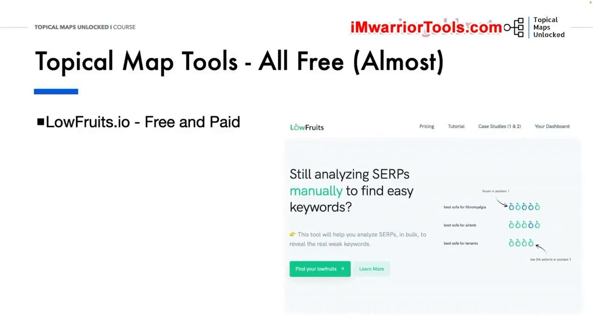
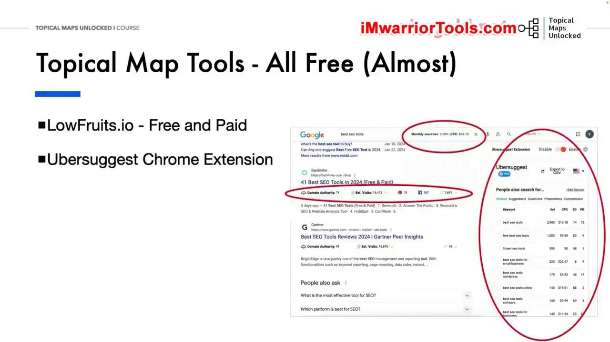
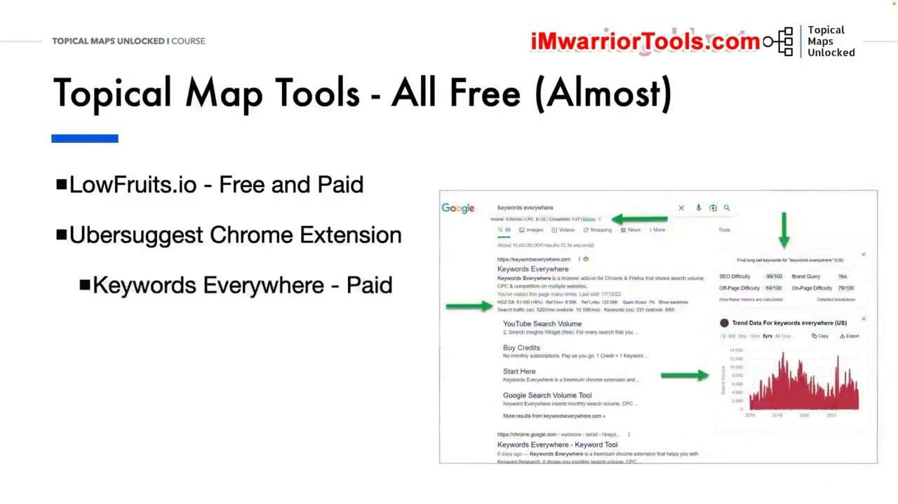
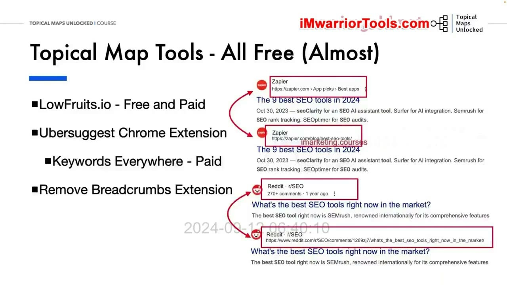
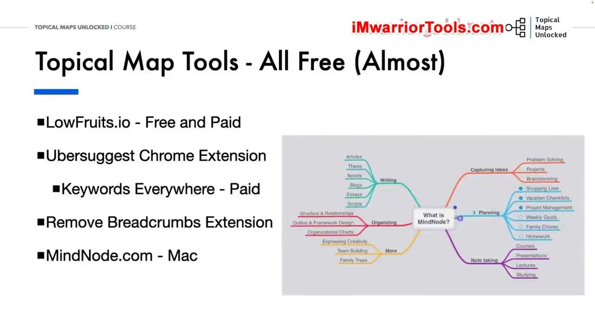
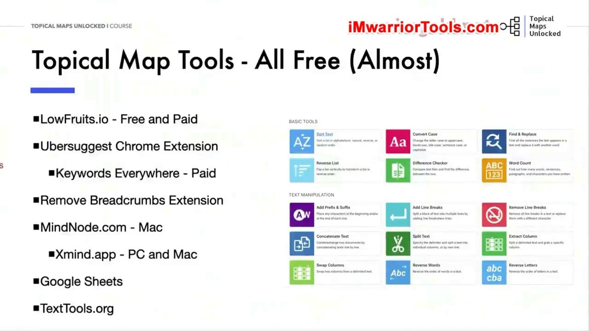

Overview of the Tools We Will Use
1. Chọn công cụ miễn phí hoặc chi phí thấp
Có nhiều công cụ có thể dùng để tạo Topical map, đặc biệt khi nghiên cứu Keyword. Với Topical Maps Unlocked, Yoyao muốn tập trung vào các công cụ miễn phí hoặc chi phí thấp. Vì vậy, danh sách này không yêu cầu sử dụng Ahrefs hay Semrush. Với các công cụ được lựa chọn, người học vẫn có thể hoàn thành nhiều việc nhanh chóng và hiệu quả.
Công cụ đầu tiên là LowFruits. Một số chức năng có thể dùng miễn phí; khi cần nhóm Keyword thì có phần trả phí. LowFruits lấy dữ liệu từ Google Autocomplete, hiển thị các điểm yếu trên SERP và tạo các cụm Keyword dựa trên SERP. Yoyao nhấn mạnh rằng cách lấy dữ liệu từ Google giúp tìm được những Keyword liên quan mới, không chỉ các Long-tail keywords.

2. LowFruits và Keyword Insights trong việc nhóm Keyword
Yoyao chia sẻ rằng ông đã thử nghiệm 13 công cụ nhóm Keyword dựa trên SERP khác nhau. Theo kết quả thử nghiệm của ông, LowFruits và Keyword Insights luôn nằm trong nhóm dẫn đầu về độ chính xác. Đây là đánh giá được ông sử dụng để giải thích lựa chọn công cụ trong khóa học.
Ông ưu tiên LowFruits cho cách làm đang hướng dẫn vì chi phí thấp hơn. Tuy nhiên, nếu ngoài nhóm Keyword bạn còn muốn tạo Content brief và tạo nội dung ngay trên cùng một nền tảng, Keyword Insights có các chức năng đó. Sự lựa chọn được trình bày theo nhu cầu công việc: nhóm Keyword với chi phí thấp, hoặc sử dụng một nền tảng có thêm những chức năng về nội dung.
3. Ubersuggest Chrome Extension: tìm Keyword và Anchor text
Ubersuggest Chrome Extension được dùng khi xem SERP, tìm thêm Keyword và các Anchor text tiềm năng. Trong bài học, Yoyao giới thiệu mô hình freemium với giới hạn 40 lượt tìm kiếm miễn phí mỗi ngày. Ông cho rằng hạn mức này đủ để sử dụng khi cần. Ông cũng nhắc đến các gói tháng và gói trọn đời với chi phí phải chăng so với một số công cụ khác.
Một điểm ông đánh giá hữu ích là khả năng xem ngay trên SERP các trang cụ thể đang xếp hạng cho những Keyword nào. Tuy vậy, từ khi Topical Maps Unlocked 1.0 được phát hành, vấn đề chính ông gặp với Ubersuggest là độ ổn định của tiện ích. Ông phân biệt rõ: điều khiến ông không hài lòng không phải bản thân dữ liệu, mà là việc tiện ích có hoạt động đúng hay không. Đôi lúc các thống kê hoặc chỉ số không hiện lên trên SERP.

4. Keywords Everywhere: lựa chọn đội ngũ chuyển sang sử dụng
Vì vấn đề vận hành vừa nêu, nội bộ đội ngũ TopicalMap chuyển sang Keywords Everywhere. Đây là công cụ trả phí, nhưng Yoyao cho rằng nếu mỗi ngày phải làm việc với nhiều Keyword thì nó là một lựa chọn tốt và có chi phí phải chăng. Ông đánh giá tiện ích này hoạt động đáng tin cậy và cung cấp lượng dữ liệu phong phú.
Phạm vi của Keywords Everywhere không chỉ ở một trang tìm kiếm. Yoyao nhắc đến khả năng cung cấp dữ liệu Keyword trên các nền tảng như YouTube, Pinterest, Instagram, Amazon và những nền tảng khác. Phần giới thiệu này tiếp nối lý do chuyển công cụ: khả năng hoạt động ổn định và lượng dữ liệu mà tiện ích đưa vào công việc hằng ngày.

5. Remove Breadcrumbs: nhìn thấy URL thật của kết quả tìm kiếm
Tiện ích Chrome miễn phí tiếp theo là Remove Breadcrumbs, được Glen Allsopp của Detailed.com giới thiệu. Đây là công cụ thuận tiện để xem URL thực tế trên SERP. Thay vì giữ phần Breadcrumbs mà Google hiển thị, tiện ích thay khu vực đó bằng địa chỉ URL thật của trang đang xuất hiện trong kết quả tìm kiếm.
Trên slide, các ví dụ là Zapier và Reddit. Khi xem hai cách hiển thị cạnh nhau, bạn có thể thấy phần Breadcrumbs đã được thay bằng URL. Mục đích của tiện ích trong bộ công cụ là giúp quan sát địa chỉ trang ngay ở SERP, thay vì chỉ nhìn thấy chuỗi điều hướng rút gọn.

6. MindNode và Xmind để thể hiện cấu trúc Topical map
Để tạo Mind map cho Topical map, Yoyao sử dụng MindNode. Ông thích dạng sơ đồ này vì chỉ cần nhìn qua là có thể nắm được trạng thái của bản đồ chủ đề và Content plan. Theo phần giới thiệu trong bài, gói miễn phí đã có những gì cần cho cách làm đang hướng dẫn.
Gói trả phí có thêm các chức năng như nhãn dán và biểu tượng cảm xúc. Bạn cũng có thể biến Mind map thành bản đồ nhiệm vụ, từ đó đánh dấu các bài viết khi đã viết xong. Những chức năng được nhắc đến gắn với cách theo dõi tiến độ nội dung trên bản đồ.
Điểm giới hạn của MindNode trong bài giới thiệu là chỉ có trên Mac. Nếu dùng Windows, bạn có thể xem Xmind; công cụ này có cả phiên bản cho Mac. Dù có lựa chọn khác trên cùng hệ điều hành, Yoyao vẫn thích MindNode hơn vì cảm thấy thao tác bằng phím tắt dễ dùng hơn một chút. Đây là sở thích làm việc của người hướng dẫn.

7. Google Sheets và các tiện ích xử lý văn bản của TextTools
Công cụ tiếp theo là Google Sheets, một công cụ bảng tính miễn phí. Yoyao cho biết ông có một mẫu bảng tính sẽ chia sẻ khi bắt đầu phần nghiên cứu các chủ đề và Keyword. Như vậy, Google Sheets nằm trong bộ công cụ để làm việc với dữ liệu khi bước sang các bài nghiên cứu thực hành.
Cuối cùng là TextTools, một website tập hợp nhiều công cụ nhỏ để thao tác văn bản. Yoyao dùng nó để loại bỏ nội dung trùng lặp, thêm tiền tố hoặc hậu tố vào danh sách Keyword, so sánh các danh sách và thực hiện những thao tác khác. Những công cụ nhỏ này phục vụ các bước xử lý danh sách trong công việc.
Website được hỗ trợ bằng quảng cáo nên có quảng cáo hiển thị và quảng cáo xen kẽ. Ông cho rằng chúng không quá phiền vì có thể đóng hoặc thu nhỏ. Ông cũng nói có nhiều nền tảng tương tự, nhưng đây là nền tảng ông đã quen sử dụng. Phần giới thiệu công cụ kết thúc bằng lời cảm ơn và hẹn gặp ở bài tiếp theo.

Tài liệu kèm bài: danh sách liên kết và ưu đãi
Tài liệu PDF kèm bài (03-Overview of the Tools We Will Use.pdf) cung cấp mã ưu đãi độc quyền dành cho học viên khóa học: tài liệu ghi mã TOPICALMAP với mức giảm 15% credit cho người dùng mới và 15% gói đăng ký cho mọi người dùng trên LowFruits. Đây là ưu đãi được nêu trong tài liệu khóa học, không phải xác nhận rằng ưu đãi vẫn còn hiệu lực hiện tại. Ngoài ra, tài liệu đính kèm đường dẫn trực tiếp tới các công cụ: LowFruits, Keyword Insights, Ubersuggest Extension, Keywords Everywhere, Remove Breadcrumbs, MindNode, Xmind, Google Sheets và TextTools.
Đường dẫn công cụ kèm bài
- https://go.topicalmap.com/lowfruits
- https://go.topicalmap.com/keyword-insights
- https://go.topicalmap.com/ubersuggest-extension
- https://go.topicalmap.com/keywords-everywhere
- https://go.topicalmap.com/remove-breadcrumbs
- https://www.mindnode.com/
- https://xmind.app/
- https://sheets.google.com/
- https://texttools.org/
Nguồn và liên kết
- Topical Maps Unlocked 2.0 · Overview of the Tools We Will Use, bài học video và tài liệu PDF cùng tên.
- Bài học chính thức